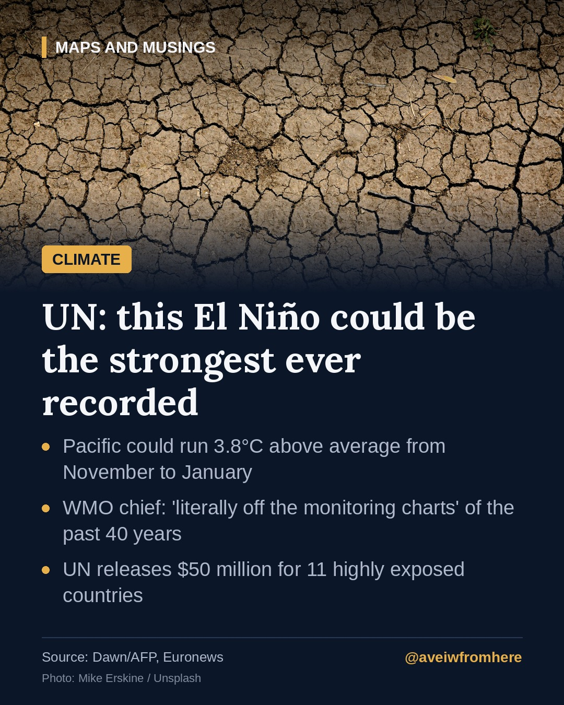

The UN says this El Niño could be 'off the charts'. What that means
The World Meteorological Organization warns the Pacific could run 3.8°C above average this winter, and the UN has released $50 million to help the most exposed countries prepare.

The United Nations warned on Wednesday, 21 October, that the El Niño now building in the Pacific could be unprecedented in strength.
The warning
Speaking in Geneva, Celeste Saulo, Secretary-General of the World Meteorological Organization (WMO), said the event is "literally off the monitoring charts that we have used for the past four decades".
The WMO's latest seasonal update says sea-surface temperatures in the tropical Pacific could reach 3.8°C above average between November and January. El Niño is expected to peak around December, but its effects on temperatures, floods and droughts are expected to last into 2027.
"We cannot stop El Niño, but we can prevent many of its worst human consequences," Saulo said.
Who is at risk
The UN's humanitarian chief, Tom Fletcher, called El Niño a "wrecking ball" for Latin America, eastern and southern Africa, Asia and the Pacific. He described what each region needs:
- Somalia, Ethiopia and Kenya: supplies prepared ahead of heavy rains
- Southern Africa: seeds and livestock support
- Central America: help for livelihoods, where drought is already killing animals and crops
- Asia and the Pacific: preparation for droughts, floods and cyclones
Fletcher released $50 million for 11 highly exposed countries, including Chad, El Salvador, Ethiopia, Somalia and South Sudan, and said the humanitarian system cannot cope on its own.
What El Niño is
El Niño is a natural warming of the tropical Pacific that shifts weather patterns worldwide. It usually returns every two to seven years and lasts nine to twelve months. According to AFP, the previous El Niño helped make 2023 the second-hottest year on record and 2024 the hottest.
What it could mean for Pakistan
The UN statements did not single out Pakistan. Asia as a whole was told to prepare for droughts, floods and cyclones, so Pakistanis should watch for the Pakistan Meteorological Department's own seasonal outlooks in the coming weeks.